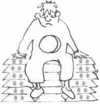

为什么信耶稣？[甘力克] 发表于:
怎么回事？

人生在世，最叫人振奋的事情，莫如：成功的人际关系——父子、夫妇、爱侣、朋友等。
有人以为基督教信仰不外乎一大堆教义、戒律、规条，但其实基督教信仰的精髓在乎——在乎一个人，而不仅仅是一套哲学理论。基督教信仰所着重的关系，是人世间最重要的关系——人与造物主的关系。耶稣说首要的诫命是全心爱神，其次是爱人如己——两条诫命都涉及关系。
所为何事？
你我受造于世，就是为了与神建立关系。除非我们与神复合，否则总会觉得生命欠缺一点什么。世人常常感到空虚无助，就是这个缘故。有一个摇滚乐手这样形容他内心的感受：“我心里，空虚难受。”
有一个家庭主妇写信给我，说她“心中有一大片空白”；另一个女孩说她“灵魂穿了一个大洞。”

世人用各种方法来填补心中的空洞。有人希望用钱填补——可惜钱财不能满足人心。已故希腊船王奥纳西斯(Aristotle S.Onassis)是世界首富之一，临终前说过这样的话：“人即使拥有万贯家财，也不能满足人心的需求。”
又有人吸毒、酗酒、滥交。有一个女孩告诉我说：“这些事可以带来一时的快感，可是过后只会觉得更空虚。”又有人朝夕工作，醉心音乐、拼命运动、竞逐名声——这些事本身并无不妥，但不能满足人内心的饥渴。
人就算得着乐人世界最亲密的关系，也不足以填满“心里头的空虚”！
人受造原是为了与神在爱中合一，人若持续与神不和好，心里总不会感到满足。
按照新约圣经的说法，人心感到空虚，因人背弃了神。
耶稣说：“我就是生命的粮。”(约 6:35) 是的，只有耶稣可以使我们的心灵得满足，因为惟有耶稣可以帮助我们与神重修旧好。
怎样下载Chrome插件和离线安装CRX文件 发表于:
自从chrome网上应用店出来后，Chrome插件就无法下载插件，必须在线安装，安装后又自动把CRX文件删除，而且是那么的迅速...
以下是下载离线插件包的方法：
第一步：
每个Google Chrome扩展都有一个固定的ID，例如
https://chrome.google.com/webstore/detail/adblock/gighmmpiobklfepjocnamgkkbiglidom
上面是一个Chrome扩展的完整URL，
在https://chrome.google.com/webstore/detail/adblock/之后的一串字符就是扩展的ID了。
即：gighmmpiobklfepjocnamgkkbiglidom
把这个扩展的ID复制下来。